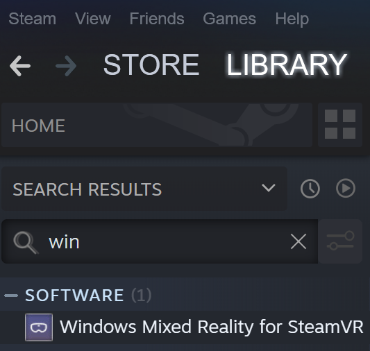
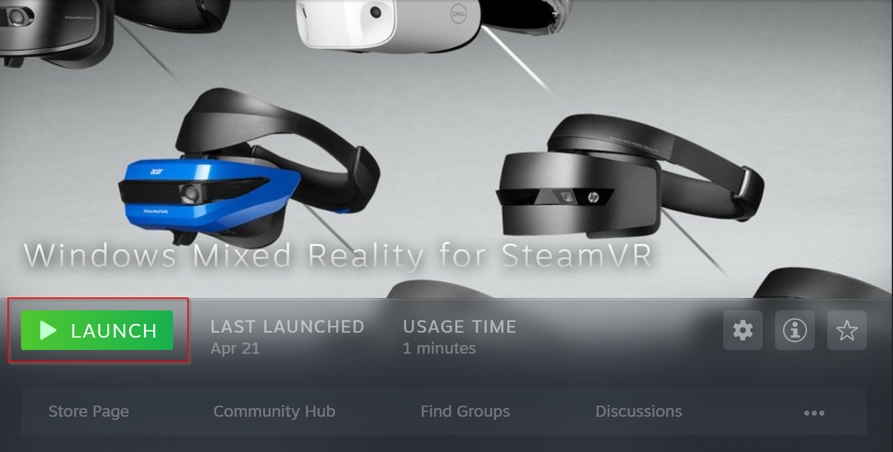
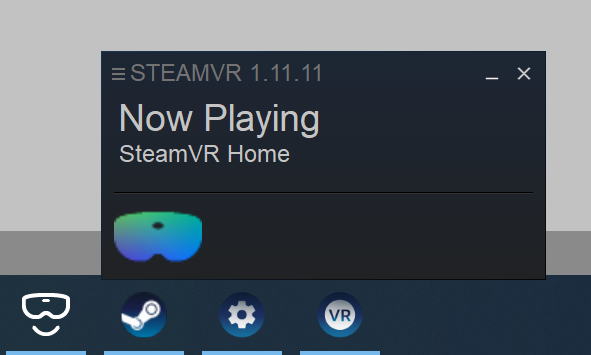
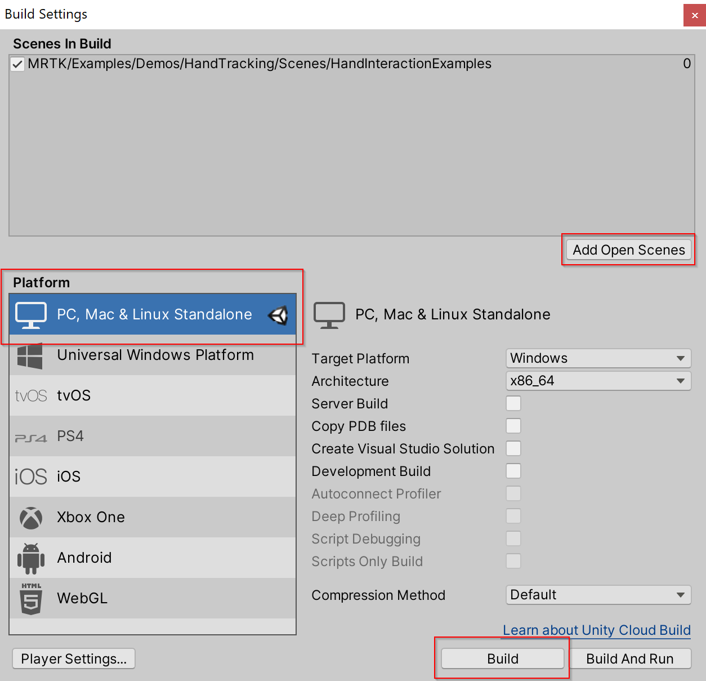
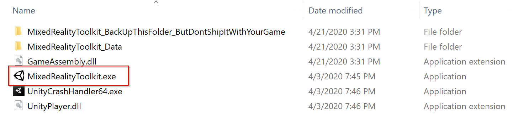

生成和部署MRTK
要将应用程序作为独立应用程序在设备上运行（适用于HoloLens，Android，iOS等），生成和部署步骤需要在unity项目中执行。生成和部署使用MRTK的应用程序就像生成和部署任何其他Unity应用程序一样。没有特定于MRTK的说明。请阅读以下内容，了解有关如何为HoloLens生成和部署Unity应用的详细步骤。了解有关在其他平台上生成的更多信息，请访问发布版本.
为HoloLens 1和HoloLens 2（UWP）生成和部署MRTK
有关如何为Hololens 1和Hololens 2（UWP）进行生成和部署的说明，请访问：将应用程序生成到设备 .
提示: 为WMR，HoloLens 1或HoloLens 2进行生成时，建议生成设置“Target SDK Version”和“Minimum Platform Version”看起来像下图所示：

其他设置可以不同（例如，“Build Configuration/Architecture/Build Type”，而其他设置始终可以在Visual Studio解决方案中更改）。
确保“目标SDK版本”下拉列表包含选项“ 10.0.18362.0”-如果缺少此选项，最新的Windows SDK 需要安装。
Unity 2019.3 和 HoloLens
如果一个HoloLens应用程序在设备上显示为2D平面，请确保在2019.3.x中配置了以下设置。在部署您的UWP应用程序之前:
如果使用legacy XR:
- 导航编辑>项目设置，播放器
- 在UWP选项卡的XR Settings下，确保启用了Virtual Reality Supported，并将 Windows Mixed RealitySDK添加到SDK中。
- 在Visual Studio中构建和部署
如果使用XR-Plugin:
- 按照开始使用 XRSDK中的步骤操作
- 确保配置文件是DefaultXRSDKConfigurationProfile
- 导航到Edit > Project Settings, XR-Plugin Management并确保Windows Mixed Reality是启用的。
- 在Visual Studio中构建和部署
Important
如果使用Unity 2019.3。选择ARM64，而不是ARM作为Visual Studio中的build architecture。使用Unity 2019.3.x中的默认Unity设置。如果因为Unity bug选中ARM, Unity应用将不会部署到HoloLens上。可以在Unity的问题跟踪器上跟踪该问题。
如果需要ARM架构，导航到Edit > Project Settings, Player，和在Other Settings 菜单禁用 Graphics Jobs。禁用Graphics Jobs 将允许应用程序使用Unity 2019.3.x的ARM build architecture进行部署，但建议使用ARM64。
构建并部署MRTK到Windows混合现实头显
Windows混合现实(WMR)头显可以用于通用Windows平台(UWP)和独立构建。一个独立构建的WMR头显需要以下额外的步骤:
Note
Unity的XR SDK也支持独立版本的本地WMR，但不需要SteamVR或WMR插件。这些步骤是Unity的legacy XR所必需的。
如何使用WMR插件
打开Steam并搜索Windows Mixed Reality Plugin
- 在启动WMR插件之前确保SteamVR是关闭的。启动WMR插件也会启动SteamVR。
- 确保WMR头显插好。

选择Launch为Windows混合现实的SteamVR插件。

SteamVR和WMR插件将启动，WMR头显的新跟踪状态窗口将出现。
更多信息请访问Windows混合现实Steam文档

在Unity中，打开MRTK场景，导航到 File > Build Settings
构建场景
- 选择Add Open Scene
- 确保平台是 Standalone
- 选择 Build
- 在文件资源管理器中选择新构建的位置

一个新的Unity可执行文件将被创建，在文件资源管理器中选择Unity可执行文件来启动你的应用。
